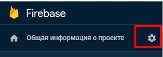
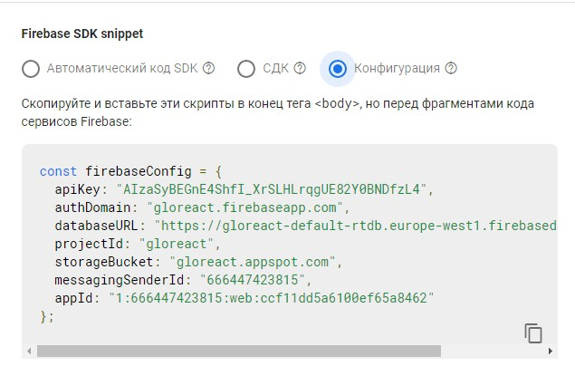
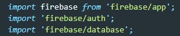
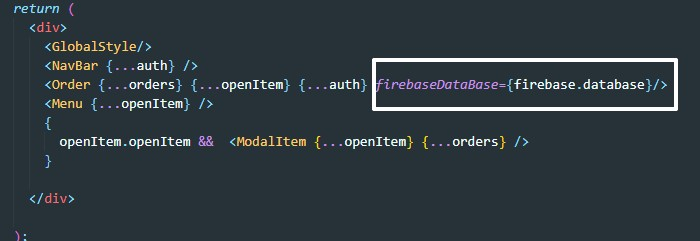

Заходим в консоль приложения и выбираем раздел RealTime DataBase, в открывшемся разделе жмем кнопку СОЗДАТЬ БАЗУ ДАННЫХ
Откроется окно с настройками правил безопасности, выбираем пункт НАЧАТЬ В ТЕСТОВОМ РЕЖИМЕ и жмем ВКЛЮЧИТЬ
Если мы до этого уже получили объект конфигурации ранее, то нам необходимо этот объект обновить, так как после создания БД в нем появились дополнительные ключи. Для его получения нажимаем на шестеренку рядом с надписью Общая информация о проекте
Нажимаем НАСТРОЙКИ ПРОЕКТА, откроется окно, спускаемся вниз и нажимаем вкладку КОНФИГУРАЦИЯ
Копируем объект с конфигурацией и копируем его в App.js
Первое что нужно сделать это установить через npm fireBase (см. главу про авторизацию часть 2)
Далее импортируем fareBase. Нам понадобится сам FaireBase и его раздел DataBase
после этого нам нужно обратиться к firebase и вызвать у него метод database. Этот метод вернет нам объект DataBase у которого есть все необходимые методы для работы с БД FireBase. D качестве примера мы передаем метод firebase.database через пропсы в компоненту, где и будем создавать этот объект
